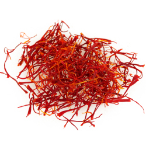

| Home | History | How to make |
|---|
First make sure that you have all the ingredients that are necessary:
* Arabic coffee (Arabica beans lightly roasted and lighter in color).
* Cardamom (better ground).
* 3 Whole cloves .
* A pinch of saffron.
* Rose water (optional).
Here are the steps to create the perfect cup of Arabic coffee:
1) Fill coffee pot with water and heat water on stove top.
2) During the process of heating add a teaspoon of ground cardamom, 3 cloves and saffron. Let it heat for 2 to 3 minutes.
3) Add the ground Arabica coffee into the pot and let it boil.
4) After boiling let it sit with in pot for 5 minutes. then it is ready to be served.